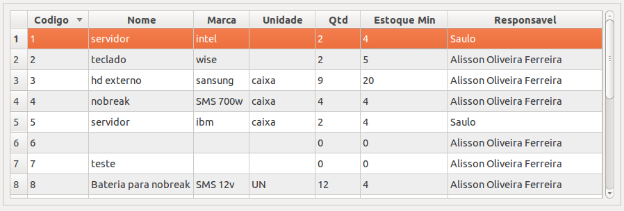
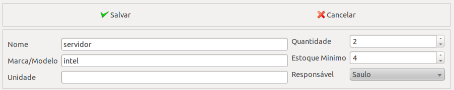
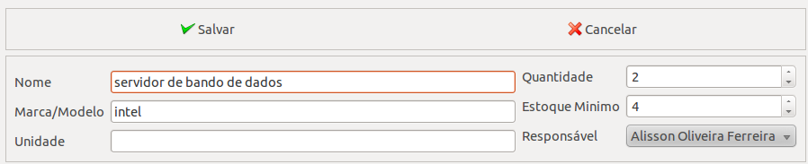
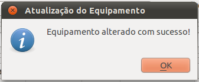
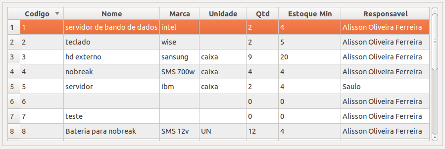
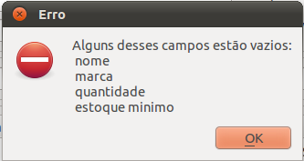

Cadastro de Equipamento¶
Nesta tela o usuario pode cadastrar os equipamentos da empresa, além de fazer a manutenção dos outros equipamentos. Manutenção significa que o usuario vai conseguir fazer as seguintes operações:
- Cadastrar um novo equipamento;
- Alterar dados dos equipamentos já cadastrados;
Cadastrando um novo equipamento¶
Para cadastrar um novo equipamento, você digita os dados do equipamento e clica no botão salvar, se quiser cancelar a operação clique em no botão cancelar,
Atualizando os dados do equipamento¶
Para atualizar os dados dos equipamentos cadastrados, você deve clicar no equipamento que deseja alterar os dados,
os campos irão ser preenchidos automaticamente, com os dados do equipamento que você clicou,
agora altere os dados do equipamento,
depois clique no botão salvar,

se a operação foi bem sucedida, você verá uma mensagem como esta,
aparecerá na linha que estava o equipamento, seus novos dados.
Mensagens de erro¶
Estas são a mensagens de erro que o sistema pode lhe retornar,
Você pode ter esquecido de preencher todos os campos.

Esta ultima mensagem de erro ocorre quando, o nome do tecnico ja existe.